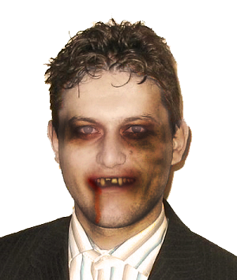

Svetlin Nakov
Svetlin Nakov is the head-master of the ZombUni. He has been a zombie for more than 15 years. During his lifetime as a zombie-tutor he managed to turn thousands poor human souls into soulless programmers fixated on updating their code and optimazing compilation time.

Alexandra Svilarova
Alex is the head-master's right hand, literally. She took Svetlin's hand and attached it for herself. Since then they work great together. She excel in human interactions and contacts. Everyone that steps through the doors of ZombUni is immediately seduced and put down to write code.
Dean Dachev
Dean Dachev is one of the first-born's of ZombUni. He was the best student of the head-master's first tries in converting little confused boys. After the process was finished, he was offered a class room full of new recruits to train, as his hero - Svetlin Nakov.